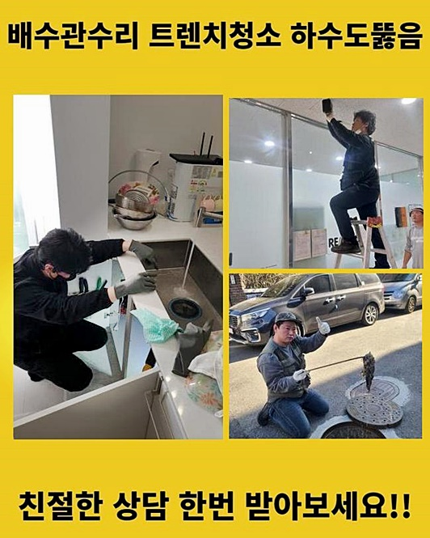
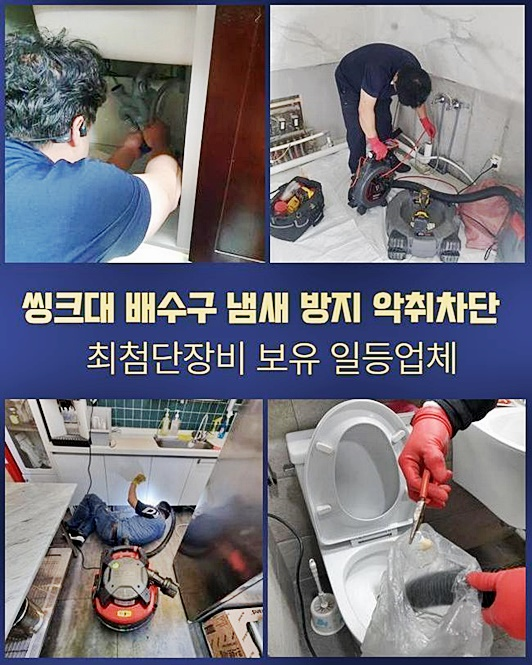
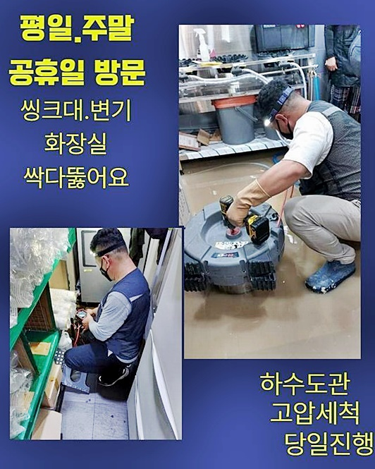
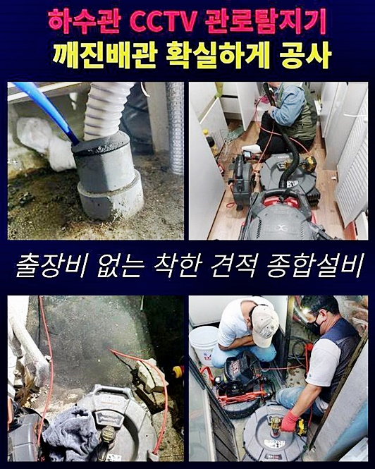
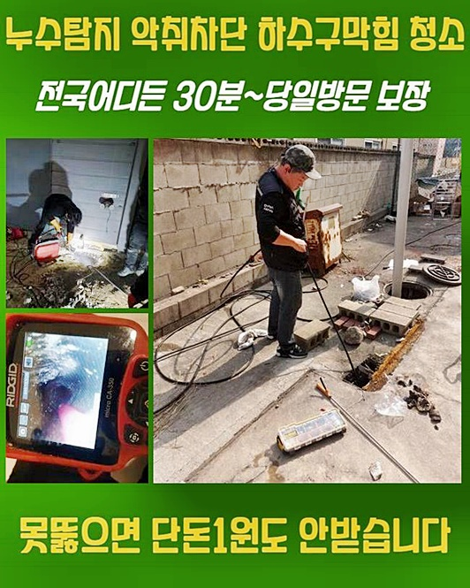
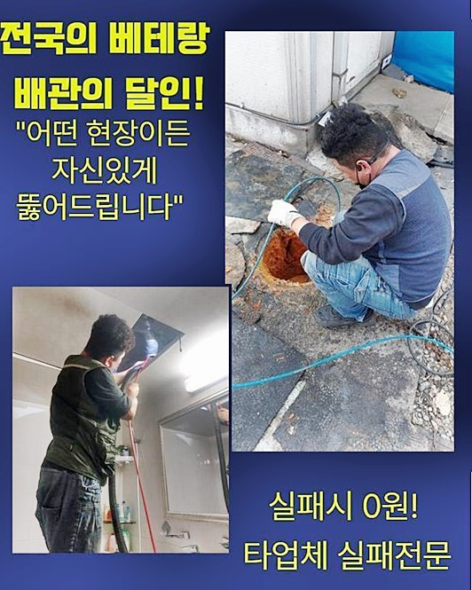

🏠 용산 한강로3가화장실하수구막힘 도원동 맨홀역류 배관막힘뚫는업체
서울 용산구 하수구막힘 전문 시공 후기

📋 작업 개요
- 위치: 서울 용산구, 용산구, 서울
- 서비스 유형: 하수구막힘, 배관막힘, 맨홀막힘, 역류해결, 뚫는업체, 배관청소, 고압세척, 설비공사
- 작업 일시: 2025. 1. 1. 11:34
- 업체명: 하수구수사대 (010-5615-2118)
🔍 문제 상황
용산 문배동화장실역류 원효로1동 배수구뚫기 배관공사
막히는문제는 일상생활에서 발현될수있는 문제이므로 조기대처를 취하시는것이 좋은데요
막힌상태마다 그에맞는 대처를 해야하며 빠르게 내방드려 문제해결을 도와드릴수있죠
고객님의 요청대로 정확한 대응으로 최상의서비스로 제공하고있죠
배수구가 막히게되어 곤란함을 겪고게신다면 아무때나 연락주셔도 괜찮아요 저희업체가 힘을써서 뚫어드릴게요!
얼마전에 빌라에 살고있는 고객이 하수관이 막히게되었다고 전화를하셨죠
이건물은 지어진지 10년가까이 흐르게된 건축물이었어요
화장실배수구에서 물이넘쳐 의뢰를 주셨는데요
저희의경우 신속한 대응으로 고객의 편리함을 첫번째로 신경쓰고있고 원하는 방문시간에 맞춰드려 작업하고있어요
평일주말 가리지않고 출동을 진행하여 하수구로인한 불편함들을 해소시키려고 한답니다
배수구에 얼만치 역류하고있는지 살핀후 물을흘려보냈죠
하수도바닥쪽이 흥건하게 젖어있을정도로 심각하다는것을 알수있었는데요
하수도안을 살폈더니 슬러지들과 이물로인해 막혔다는것을 예상했습니다
막히는현상은 갑작스럽게 일어나지않고 하수도를 사용하며 생기는 잔여물질이 쌓이면서 막히게되는것이고 이에대해 관리해주는것이 필요한점을 안내드렸어요

🔎 원인 분석
💡 전문가 진단: 정밀 진단 장비를 사용하여 슬러지의 고착 여부를 판명하고 타격/세척 작업을 실시했습니다.
이를통하여 고객의 궁금증들을 해소할수가 있었답니다
이번장소에서는 전에작업했던 이물청소가 충분하지못한것이 원인이었답니다
오염물이 축적되어서 물이정상적으로 흐르지못했어요
배관카메라를 이용해서 청소과정을 꼼꼼하게 설명드렸죠
오랫동안 쌓여있다보니 남게된 잔여물의형태가 무엇인지 정확하게 알순없어도 꼼꼼한작업으로 해결할수가 있었답니다
재발하는일이 일어나지않도록 주의를기울여 확실한서비스로 보여드릴것을 약속할게요
내부오염물을 확실히 제거해줘야해요
주위에서 쉽게 구할수있는 제품들을 사용해서 셀프조치로 해결해보고자하지만 성공적인 결과물이 나타날수없고 내버려두신다면 오히려현상을 심하게만들수 있답니다
이러므로 전문기술자를 호출해서 내부속이물을 철저하게 제거해주어야해요
이러한증세는 부주의한 사용으로 발현되게되는데 설거지를할때 음식물잔해나 기름들이 퇴적되게되면서 발현되고있어요
하수관이 막히게되어 전화하신 고객분을위해서 신속히 작업장소로 출동했어요
검사를위해 전문기기들을 대동하여 작업에 들어갔어요
오염물을 제거하는건 흡입장비나 샤프트장비를 통해서 해결되고있죠
오염물이 쌓인곳은 고압세척과정을 착수해 제거하고 잔여물질의경우 흡입장비로 빨아들이고있죠

🔧 작업 과정
깔끔하게 이물을 소거하고 하수도를 깔끔한상태로 만들어보는데 최선을다하죠
이런과정으로 하수구세척을 진행하여 곤란한점을 바로잡고 예방까지해드려요
저희들의 출동시간대는 제한된상태로 이루어지지않고있죠
이유를 알려드리면 밤낮가리지않고 막힘증세로 인하여 곤란할수있기 때문이죠
출동요청이 들어와서 전문기계를 준비해서 작업장소로 출동드렸어요
욕실쪽으로 이동해보니 심한악취를 동원하면서 심각한상태임을 알아차렸죠
물을흘려보내고서 역류문제는 괜찮은지 꼼꼼하게 확인한뒤 물빠짐상태까지 체크해보았어요
저희업체에서 내방하기전에도 타업체가내방해서 성공하지못했다고 하셨는데요
따라서 우리를 부르셨다고 합니다
저흰 출동과정에대한 청구드리지않기에 서비스가만족된다고 말씀해주셨어요
성공한뒤에도 AS까지 진행하기때문에 상당히 만족해하셨죠
하수도안을 검사하고자 내시경장비를 사용했어요
배수구상태를 살펴보니 오염물이 보이는것을 파악할수있었죠
확실하게 작업하기위해 최선을다했고 성공하는결과를 보여드릴수가 있었어요!
배관내벽에 달라붙어있는 잔여물을 없애기위해 흡입장비를 통하여 오염물세척이 이루어졌어요
흡입작업후 물이빠지는것을 체크하기위해 흘려보내보았지만 물이내려가는것이 원활히 작동되지않는것을 발견했어요
하수구cctv를 이용해서 하수관내부를 세세하게 살펴봤습니다
관찰중에 내시경기기가 걸리는위치를 발견해서 세밀한대처를 해볼수가있었어요
플렉스샤프트로 굳은잔여물까지 소거해보니 정상적인 배수상태로 이루어진것을 확인가능했죠
요청하신 시간에맞춰 작업이 마무리되고 예방방법도 제시해드렸죠
고객님과의 소통을통해 원활하게 작업계획이 이루어졌죠
막힘증세를 처음경험하셔서 당황스럽고 막힌이유를 알지못해 답답하실거에요


✅ 작업 완료
막힘증세때문에 일상에 지장이간다면 전문적인 조치가 필요하기에 편하실때 저희업체로 문의주시면 된답니다
뚫어낼수있도록 성심성의껏 작업할게요
다시한번 강조드리면 막힘현상은 방치하게되면 2차적인 문제로 발발될수있기에 막힘징조가 보일때 해결해보시는것이 좋겠습니다
60분안쪽으로 내방이가능하니 의뢰주시면 신속빠르게 방문드리도록 할게요!
분명하게 수리계획을 공개하고있으니 염려하지마세요
이것말고도 궁금한게있다면 문의하셔서 물어보셔도되기에 마음편히 요청주신다면 세세한응대로 도와드려볼게요




⚠️ 하수구 배관 막힘 예방 및 관리 가이드
- ✅ 머리카락, 비닐, 물티슈 등 물에 분해되지 않는 이물질은 하수구 유입을 절대 금지해 주세요.
- ✅ 하수구 거름망을 씌우고 모여진 이물질은 주기적으로 쓰레기통에 바로 비워주셔야 합니다.
- ✅ 배관 노후가 심할 경우 이물질이 더 쉽게 걸리므로 주기적인 배관 세척(고압세척 등)을 권장합니다.
- ✅ 작업 후 1년 이내 재발 시 하수구수사대에서 무상 A/S 보증 서비스를 제공합니다.
💡 핵심 정리
- 확실한 장비 작업(내시경 점검 및 샤프트 스케일링)으로 원인을 뿌리 뽑습니다.
- 작업 후 1년 이내에 동일한 부위 재발 시 100% 무상 A/S 서비스를 보장합니다.
- 서울 · 경기 · 인천 전 지역에 24시간 언제든 긴급 출동할 수 있도록 항시 대기 중입니다.
❓ 자주 묻는 질문 (FAQ)
🚨 서울 용산구 하수구막힘 문제로 고민이신가요?
정확한 원인 진단과 확실한 시공으로 재발 없는 해결을 약속드립니다.
24시간 긴급 출동 | 서울 · 경기 · 인천 전지역 | 1년 내 재발 시 무상 A/S